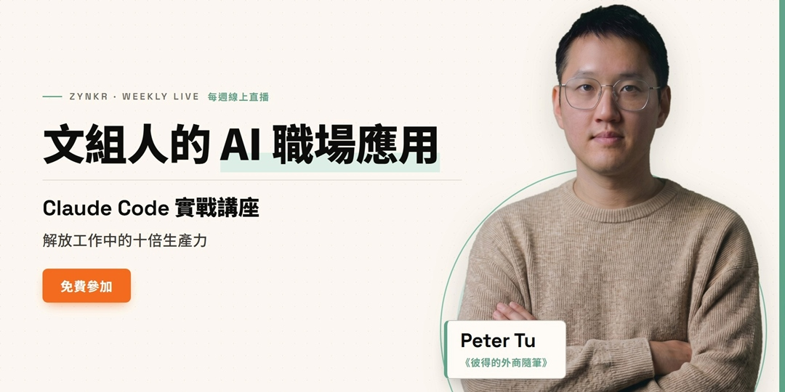
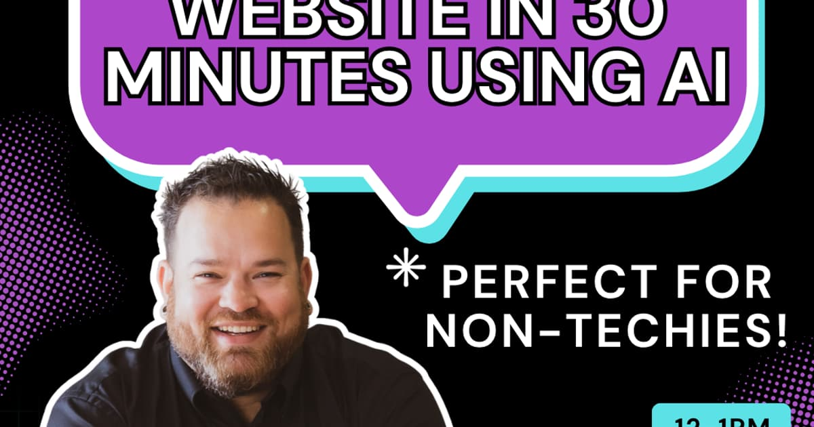
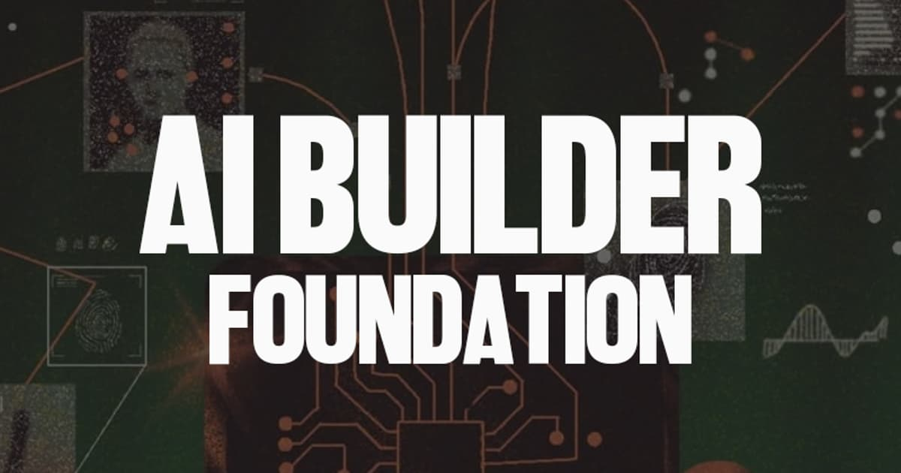

今日舉行
Claude Code 實戰講座：解放工作中的十倍生產力
《彼得的外商隨筆》Claude Code 實戰講座：解放工作中的十倍生產力
示範用 Claude Code 整理資料與檔案、建立內容架構與文章，並連接 Google Drive／Notion 等工作系統，讓 AI 直接參與成段工作流程。
報名後票券頁／電郵會提供 Google Meet 連結。
官方連結 →
免費 AI 課程卷報 · 復古日刊
今日提要：核實收錄 19 項線上免費 AI 課程／工作坊，其中 9 項於今日舉行（主辦時區；部分換算後為澳門翌日清晨／凌晨），其餘為今日仍可報名或即時開讀嘅自學課。免費＝無需付費即可參加或旁聽；證書或 API 用量或另計，已於卡片註明。公開網址：https://wayneleong-byte.github.io/juanbao/。澳門今晚重點：19:55 繁中 Claude Code 實戰；20:00 起三場 Luma（AI 建站／每日 Masterclass／AI Builder）；22:30 TAI Labs MCP。澳門翌日凌晨至清晨：Data Science Dojo Agentic AI Conference（兩日免費線上）、退伍軍人 AI 高峰會、JHU「AI 與理財」、以及 45 分鐘 AI 整理入門。中文場已跟到 Accupass（Claude Code，isFree=true）。已剔除付費、會員限定、校內電郵限定、實體場及非今日舉行之場次。11 月 6 至 8 日未出刊，今日恢復。

示範用 Claude Code 整理資料與檔案、建立內容架構與文章，並連接 Google Drive／Notion 等工作系統，讓 AI 直接參與成段工作流程。
報名後票券頁／電郵會提供 Google Meet 連結。
官方連結 →
午餐時段由空白畫面即場用 AI 為一間真實生意建網站並上線，示範 briefing、提示順序、出錯時點處理，以及適用與不適用之處。
面向生意／社群負責人；唔使技術背景。Luma 標明 live only、無回放。
官方連結 →
兩小時線上 masterclass，介紹非技術背景人士如何將 AI 包裝成服務（chatbot、電話 agent、網站、廣告、圖像影片、自動化）及定價思路。
官方寫明課堂免費；或會談到收費服務包裝，入場本身免費。教育用途，不保證收入。
官方連結 →
給未做過 AI 專案嘅人：AI builder 是什麼、常用概念與工具、把一個想法做成第一個可運行項目，以及取得更好結果的實務提示。
官方寫 beginner-friendly、唔使先前經驗；請自備手提電腦以便跟做。
官方連結 →
半小時實務直播：示範如何用 Model Context Protocol 把 Claude 連到真實工具，並以問答處理實際工作限制。
標題標 Free live AI workshop；會後或有跟進資源。
官方連結 →
兩日討論如何大規模使用 AI agents 而不出事：Docker 主題演講、主權 AI／安全／協作面板，以及 LandingAI、Google DeepMind、AMD、Neo4j、NVIDIA 等實作教學。第一日講者包括 Docker CPO Mat Velloso。
會議有錄影。登記頁：https://us02web.zoom.us/webinar/register/WN_Zy3GopvlQj6WLH7YdfLDqg
官方連結 →
兩日線上高峰會，分享把 AI 與自動化用於生意、工作或轉職的實務做法；預期帶走本週可交托給 AI 的一項任務、值得試／可略過的工具清單，以及下一步。
對象寫退伍軍人、軍眷、創業者與專業人士。免費入場；VIP 另計。
官方連結 →財務健康系列：AI 如何幫忙預算、儲蓄與訂目標，以及投資建議嘅界限、如何辨識不準確或偏頗內容，同埋不應向 AI 透露的私隱資料。
公開開放；由個人理財講者 Shahar Ziv 主持。頁面有學生出席抽獎，唔影響公眾旁聽。
官方連結 →入門直播：用 AI 把計劃筆記變成清單、按已確認資料寫邀請，並在時間有限時調整準備計劃；同時練習分辨建議與既定事實。
每月第二個星期一系列，下一次 12 月 14 日需另行免費報名。結尾會簡介可選的一對一付費支援，入場與講義無需付費。
官方連結 →
赫爾辛基大學聯同 MinnaLearn 推出嘅免費 AI 素養課，無需複雜數學或編程；另有 Building AI 進階篇。
2026-11-09 重新核實連結仍活（HTTP 200）。
官方連結 →
解釋生成式 AI 是什麼、點用、同傳統 ML 分別，並介紹 Google 工具；可賺技能徽章。
2026-11-09 重新核實 536FREE 頁仍活（HTTP 200）。
官方連結 →
Google 實務 ML 入門：動畫、互動可視化與練習；涵蓋回歸、分類、神經網絡、LLM 簡介與公平性等。
2026-11-09 重新核實連結仍活（HTTP 200）。
官方連結 →
用 Transformers、Datasets、Tokenizers、Accelerate 學 LLM／NLP；Colab 可跑程式。需良好 Python。
2026-11-09 重新核實連結仍活（HTTP 200）。
官方連結 →
由 Agent 基礎到 smolagents、LlamaIndex、LangGraph；可 audit 或做作業攞免費證書。需基礎 Python 與 LLM 概念。
2026-11-09 重新核實連結仍活（HTTP 200）。
官方連結 →
涵蓋職場應用、Build with AI、領導採用、教學應用等軌道；通過評核可攞 badge（非正式認證）。
2026-11-09 重新核實連結仍活（HTTP 200）。
官方連結 →
由第一次對話、提示、Projects／Artifacts／Skills，到 Connectors 與角色應用；Academy 整體標明免費。
2026-11-09 重新核實連結仍活（HTTP 200）。
官方連結 →
概念課＋實作課；建議有 Python／TypeScript 基礎。內容免費；呼叫雲端模型 API 可能產生費用，可用本地模型。
2026-11-09 重新核實連結仍活（HTTP 200）。
官方連結 →
Jeremy Howard 主講，面向有編程經驗者；PyTorch／fastai／Hugging Face，可用免費雲端資源。配套書亦免費網上可讀。
2026-11-09 重新核實連結仍活（HTTP 200）。
官方連結 →
完全免費：AI 演進、醫療決策、影像辨識、語言模型、可信／公平／可解釋性。不限身分。
2026-11-09 重新核實連結仍活（HTTP 200）。
官方連結 →2026-11-06、2026-11-07、2026-11-08 未出刊。